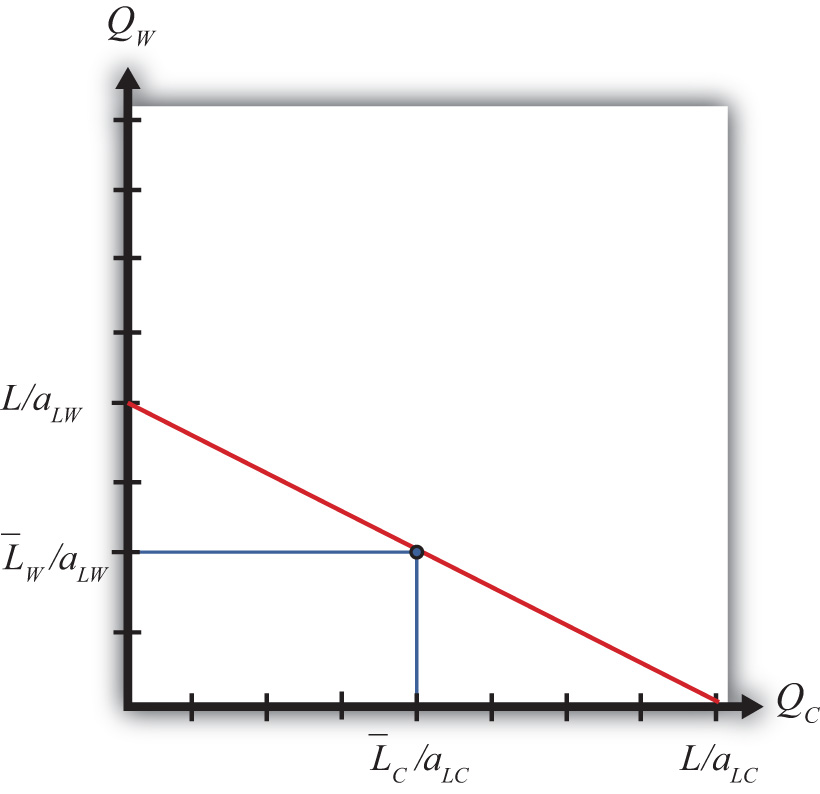
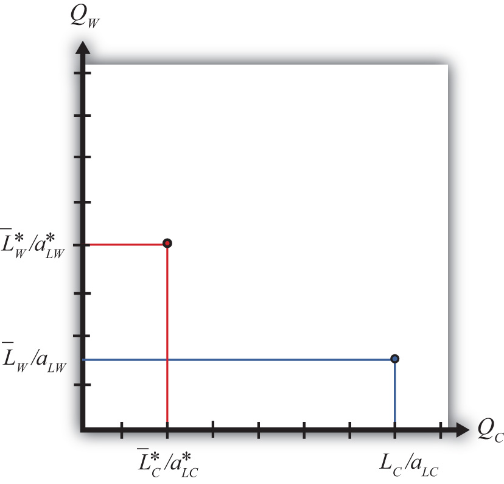
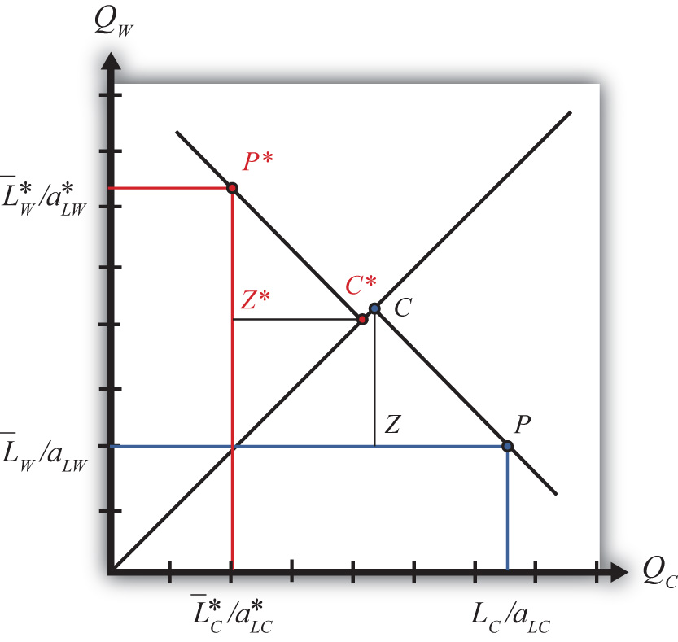
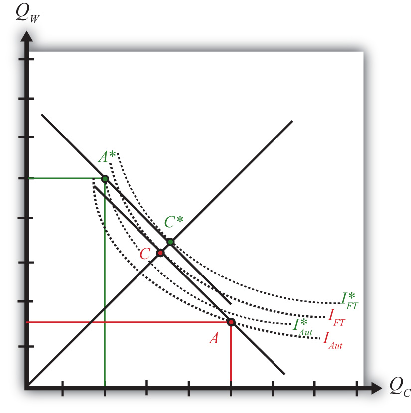

This chapter continues the theme of income redistribution as a consequence of international trade. The focus here is the effect of factor immobility. In the Ricardian model presented in Chapter 2, it is assumed that workers can move freely and costlessly to another industry. In addition, it is assumed that each worker has the same productivity as every other worker in every other industry. This assumption makes it inconsequential if one industry shuts down because, if it does, the workers simply move to another industry where they will be just as productive and will likely earn a higher wage.
This chapter asks, “What happens if free and costless factor mobility does not hold?” The answer is provided by the results of the immobile factor model. This model is helpful for two important reasons. First, from a practical perspective, the model provides a reason why there can be both winners and losers as a result of international trade. Second, the model highlights an important technique used in economic analysis. Because the immobile factor model is identical to the Ricardian model in all but one assumption, the model demonstrates how changes in model assumptions directly impact the model implications and results. This is an important lesson about the method of economic analysis more generally.
Factor mobilityThe ability to move factors of production—labor, capital, or land—out of one production process and into another. refers to the ability to move factors of production—labor, capital, or land—out of one production process into another. Factor mobility may involve the movement of factors between firms within an industry, as when one steel plant closes but sells its production equipment to another steel firm. Mobility may involve the movement of factors across industries within a country, as when a worker leaves employment at a textile firm and begins work at an automobile factory. Finally, mobility may involve the movement of factors between countries either within industries or across industries, as when a farm worker migrates to another country or when a factory is moved abroad.
The standard assumptions in the trade literature are that factors of production are freely (i.e., without obstruction) and costlessly mobile between firms within an industry and between industries within a country but are immobile between countries.
The rationale for the first assumption—that factors are freely mobile within an industry—is perhaps closest to reality. The skills acquired by workers and the productivity of capital are likely to be very similar across firms producing identical or closely substitutable products. Although there would likely be some transition costs incurred, such as search, transportation, and transaction costs, it remains reasonable to assume for simplicity that the transfer is costless. As a result, this assumption is rarely relaxed.
The assumption that factors are easily movable across industries within a country is somewhat unrealistic, especially in the short run. Indeed, this assumption has been a standard source of criticism for traditional trade models. In the Ricardian and Heckscher-Ohlin models, factors are assumed to be homogeneous and freely and costlessly mobile between industries. When changes occur in the economy requiring the expansion of one industry and the contraction of another, it just happens. There are no search, transportation, or transaction costs. There is no unemployment of resources. Also, since the factors are assumed to be homogeneous, once transferred to a completely different industry, they immediately become just as productive as the factors that had originally been employed in that industry. Clearly, these conditions cannot be expected to hold in very many realistic situations. For some, this inconsistency is enough to cast doubt on all the propositions that result from these theories.
It is important to note, however, that trade theory has attempted to deal with this concern to some extent. The immobile factor model (in Chapter 4 "Factor Mobility and Income Redistribution") and the specific factor model (in Chapter 5 "The Heckscher-Ohlin (Factor Proportions) Model", Section 5.15 "The Specific Factor Model: Overview") represent attempts to incorporate factor immobility precisely because of the concerns just mentioned. Although these models do not introduce resource transition in a complicated way, they do demonstrate important income redistribution results and allow one to infer the likely effects of more complex adjustment processes by piecing together the results of several models. (See Chapter 5 "The Heckscher-Ohlin (Factor Proportions) Model", Section 5.17 "Dynamic Income Redistribution and Trade", especially.)
Another important aspect of factor mobility involves the mobility of factors between countries. In most international trade models, factors are assumed to be immobile across borders. Traditionally, most workers remain in their country of national origin due to immigration restrictions, while government controls on capital have in some periods restricted international movements of capital. When international factor mobility is not possible, trade models demonstrate how national gains can arise through trade in goods and services.
Of course, international mobility can and does happen to varying degrees. Workers migrate across borders, sometimes in violation of immigration laws, while capital flows readily across borders in today’s markets. The implications of international factor mobility have been addressed in the context of some trade models. A classic result by Robert A. Mundell (1957) demonstrates that international factor mobility can act as a substitute for international trade in goods and services. In other words, to realize all the gains from international exchange and globalization, countries need to either trade freely or allow factors to move freely between countries.Robert A. Mundell, “International Trade and Factor Mobility,” American Economic Review 47 (1957): 321–35. It is not necessary to have both. Mundell’s result contradicts a popular argument that free trade can only benefit countries if they also allow workers to move freely across borders.
Factors of production are potentially mobile in three distinct ways:
Domestic factor mobilityWhen productive factors like labor, capital, land, natural resources, and so on can be reallocated across sectors within a domestic economy. refers to the ease with which productive factors like labor, capital, land, natural resources, and so on can be reallocated across sectors within the domestic economy. Different degrees of mobility arise because there are different costs associated with moving factors between industries.
As an example of how the adjustment costs vary across factors as factors move between industries, consider a hypothetical textile firm that is going out of business.
The textile firm employs a variety of workers with different types of specialized skills. One of these workers is an accountant. Fortunately for the accountant, she has skills that are used by all businesses. Although there may be certain specific accounting techniques associated with the textile industry, it is likely that this worker could find employment in a variety of industries. The worker would still suffer some adjustment costs such as a short-term reduction in salary, search costs to find another job, and the anxiety associated with job loss. However, assuming there is no glut of accountants in the economy, this worker is likely to be fairly mobile.
Consider another worker who is employed as a seamstress in the textile firm. If the textile industry as a whole is downsizing, then it is unlikely that she will find a job in another textile plant. Also, the skills of a seamstress are not widely used in other industries. For this worker, finding another job may be very difficult. It may require costs beyond those incurred by the accountant. This worker may decide to learn a new profession by attending a vocational school or going to college. All of this requires more time and incurs a greater cost.
Next consider the capital equipment used in the textile plant. The looms that are used to weave cloth are unlikely to be very useful or productive in any other industry. Remaining textile firms might purchase them, but only if the prices are very low. Ultimately, these machines are likely to fall into disuse and be discarded. Looms exhibit very low mobility to other industries.
However, consider a light truck owned and operated by the firm. This truck could easily be sold and used by another firm in a completely different industry. The only costs would be the cost of making the sale (advertisements, sales contracts, etc.) and perhaps the cost of relabeling the truck with the new company name. The truck is relatively costlessly transferable across industries.
Finally, consider the land on which the textile plant operates. Depending on the location of the firm and the degree of new business creations or expansions in the area, the land may or may not be transferred easily. One possible outcome is that the property could be sold to another business that would recondition it to suit its needs. In this case, the cost of mobility includes the transactions costs to complete the sale plus the renovation costs to fix up the property for its new use. Alternatively, the land could remain for sale for a very long time during which the plant merely becomes an eyesore. In this case, the land’s immobility may last for years.
These examples suggest that the cost of factor mobility varies widely across factors of production. Some factors such as accountants and trucks may be relatively costless to move. Other factors like looms and seamstresses may be very costly to move. Some factors like land may be easy to move in some instances but not in others.
Jeopardy Questions. As in the popular television game show, you are given an answer to a question and you must respond with the question. For example, if the answer is “a tax on imports,” then the correct question is “What is a tariff?”
The degree of mobility of factors across industries is greatly affected by the passage of time. In the very, very short run—say, over a few weeks’ time—most unemployed factors are difficult to move to another industry. Even the worker whose skills are readily adaptable to a variety of industries would still have to take time to search for a new job. Alternatively, a worker in high demand in another industry might arrange for a brief vacation between jobs. This means that over the very short run, almost all factors are relatively immobile.
As time passes, the most mobile factors begin to find employment in other industries. At the closed textile plant, some of the managers, the accountants, and some others may find new jobs within four to six months. The usable capital equipment may be sold to other firms. Looms in good working condition may be bought by other textile plants still operating. Trucks and other transport equipment will be bought by firms in other industries. As time progresses, more and more factors find employment elsewhere.
But what about the seamstress near retirement whose skills are not in demand and who is unwilling to incur the cost of retraining? Or the capital equipment that is too old, too outdated, or just inapplicable elsewhere in the economy? These factors, too, can be moved to other industries given enough time. The older workers will eventually retire from the workforce. Their replacements will be their grandchildren, who are unlikely to seek the skills or jobs of their grandparents.
Merely recall the decline of family farms in America. For generations, children followed parents as farmers until it eventually became unprofitable to continue to operate the same way. As the number of farmers declined, the children of farmers began to move into the towns and cities. They went to colleges and often learned skills very different from their parents and grandparents.
In this way, as generations age and retire, the children acquire the new skills in demand in the modern economy, and the distribution of skills in the workforce changes. Labor automatically becomes mobile across industries if we allow enough time to pass.
Consider also the capital equipment that is unusable in any other industry. This capital is also mobile in a strange sort of way. Generally, as capital equipment is used, its value declines. Often the cost of repairs rises for an older machine. Older machines may be less productive than newer models, also reducing their relative worth. When capital depreciates, or loses its value, sufficiently, a firm continuing to produce would likely invest in a new machine. Investment requires the owners of the firm to forgo profits in order to purchase new capital equipment.
Now suppose the firm is a textile plant and the owners are shutting it down. The capital equipment at the firm will suddenly depreciate more rapidly than originally anticipated.
As this equipment depreciates, however, new investments will not be directed at the same type of capital. Instead, investors will purchase different types of capital that have the potential for profits in other industries. In this way, over time, as the current capital stock depreciates, new investment is made in the types of capital needed for production in the future. With enough time, the capital stock is moved out of declining, unprofitable industries and into expanding, profitable industries.
In summary, virtually all factors are immobile across industries in the very short run. As time progresses and at some cost of adjustment, factors become mobile across sectors of the economy. Some factors move more readily and at less cost than others. In the long run, all factors are mobile at some cost. For workers, complete mobility may require the passing of a generation out of the workforce. For capital, complete mobility requires depreciation of the unproductive capital stock, followed by new investment in profitable capital.
Jeopardy Questions. As in the popular television game show, you are given an answer to a question and you must respond with the question. For example, if the answer is “a tax on imports,” then the correct question is “What is a tariff?”
The immobile factor modelA standard Ricardian model with one variation in its assumptions, namely, that labor, the sole factor of production, is immobile between industries within a country. highlights the effects of factor immobility between industries within a country when a country moves to free trade. The model is the standard Ricardian model with one variation in its assumptions. Whereas in the Ricardian model, labor can move costlessly between industries, in the immobile factor model, we assume that the cost of moving a factor is prohibitive. This implies that labor, the only factor, remains stuck in its original industry as the country moves from autarky to free trade.
The assumption of labor immobility allows us to assess the short-run impact of movements to free trade where the short run is defined as the period of time when all factors of production are incapable of moving between sectors. The main result of the model is that free trade will cause a redistribution of income such that some workers gain from trade, while others lose from trade.
The immobile factor model assumptions are identical to the Ricardian model assumptions with one exception. In this model, we assume that LC and LW are exogenous. This means that there is a fixed supply of cheese workers and wine workers. Cheese workers know how to make cheese but cannot be used productively in the wine industry, and wine workers cannot be used productively in the cheese industry. This assumption differs from the Ricardian model, which assumed that labor was freely mobile across industries. In the Ricardian model, a cheese worker who moved to the wine industry would be immediately as productive as a longtime wine worker.
Neither assumption—free and costless mobilityFactors that can be moved by their owners to another production process without impediment and without incurring any adjustment costs. nor complete immobility—is entirely realistic. Instead, they represent two extreme situations. The Ricardian assumption can be interpreted as a long-run scenario. Given enough time, all factors can be moved and become productive in other industries. The immobile factor assumption represents an extreme short-run scenario. In the very short run, it is difficult for any factor to be moved and become productive in another industry. By understanding the effects of these two extremes, we can better understand what effects to expect in the real world, characterized by incomplete and variable factor mobility.
What follows is a description of the standard assumptions in the immobile factor model. We assume perfect competition prevails in all markets.
The model assumes two countries to simplify the model analysis. Let one country be the United States, the other France. Note that anything related exclusively to France in the model will be marked with an asterisk.
The model assumes there are two goods produced by both countries. We assume a barter economy. This means that no money is used to make transactions. Instead, for trade to occur, goods must be traded for other goods. Thus we need at least two goods in the model. Let the two produced goods be wine and cheese.
The model assumes there are two factors of production used to produce wine and cheese. Wine production requires wine workers, while cheese production requires cheese workers. Although each of these factors is a kind of labor, they are different types because their productivities differ across industries.
Factor owners are also the consumers of the goods. We assume the factor owners have a well-defined utility function defined over the two goods. Consumers maximize utility to allocate income between the two goods.
The immobile factor model is a general equilibrium model. The income earned by the factor is used to purchase the two goods. The industries’ revenue in turn is used to pay for the factor services. The prices of the outputs and the factor are determined such that supply and demand are equalized in all markets simultaneously.
We will assume that aggregate demand is homothetic in this model. This implies that the marginal rate of substitution between the two goods is constant along a ray from the origin. We will assume further that aggregate demand is identical in both of the trading countries.Note that this assumption is a technical detail that affects how the trading equilibrium is depicted but is not very important in understanding the main results.
The production functions in Table 4.1 "Production of Cheese" and Table 4.2 "Production of Wine" represent industry production, not firm production. The industry consists of many small firms in light of the assumption of perfect competition.
Table 4.1 Production of Cheese
| United States | France |
|---|---|
|
where QC = quantity of cheese produced in the United States = fixed amount of labor applied to cheese production in the United States aLC = unit labor requirement in cheese production in the United States (hours of labor necessary to produce one unit of cheese) ∗All starred variables are defined in the same way but refer to the production process in France. |
|
Table 4.2 Production of Wine
| United States | France |
|---|---|
|
where QW = quantity of wine produced in the United States = amount of labor applied to wine production in the United States aLW = unit labor requirement in wine production in the United States (hours of labor necessary to produce one unit of wine) ∗All starred variables are defined in the same way but refer to the production process in France. |
|
The unit labor requirements define the technology of production in the two countries. Differences in these labor costs across countries represent differences in technology.
Jeopardy Questions. As in the popular television game show, you are given an answer to a question and you must respond with the question. For example, if the answer is “a tax on imports,” then the correct question is “What is a tariff?”
To derive the production possibility frontier (PPF) in the immobile factor model, it is useful to begin with a PPF from the Ricardian model. In the Ricardian model, the PPF is drawn as a straight line with endpoints given by L/aLC and L/aLW, where L is the total labor endowment available for use in the two industries (see Figure 4.1 "The Immobile Factor Model PPF"). Since labor is moveable across industries, any point along the PPF is a feasible production point that maintains full employment of labor.
Figure 4.1 The Immobile Factor Model PPF
Next, let’s suppose that some fraction of the L workers are cheesemakers, while the remainder are winemakers. Let be the number of cheesemakers and be the number of winemakers such that . If we assume that these workers cannot be moved to the other industry, then we are in the context of the immobile factor model.
In the immobile factor model, the PPF reduces to a single point represented by the blue dot in Figure 4.1 "The Immobile Factor Model PPF". This is the only production point that generates full employment of both wine workers and cheese workers. The production possibility set (PPS) consists of the set of points that is feasible whether or not full employment is maintained. The PPS is represented by the rectangle formed by the blue lines and the QC and QW axes.
Notice that in the immobile factor model, the concept of opportunity cost is not defined because it is impossible, by assumption, to increase the output of either good. No opportunity cost also means that neither country has a comparative advantage as defined in the Ricardian model. However, this does not mean there is no potential for advantageous trade.
Jeopardy Questions. As in the popular television game show, you are given an answer to a question and you must respond with the question. For example, if the answer is “a tax on imports,” then the correct question is “What is a tariff?”
Suppose two countries, the United States and France, have the exactly the same number of winemakers and cheesemakers. This means and . Suppose also that the United States has an absolute advantage in the production of cheese, while France has the absolute advantage in the production of wine. This means and . Also, assume that the preferences for the two goods in both countries are identical.
For simplicity, let aggregate preferences be represented by a homothetic utility function. These functions have the property that for any price ratio, the ratio of the two goods consumed is equal to a constant. One function with this property is , where is the aggregate quantity of cheese demanded and is the aggregate quantity of wine demanded. This function says that the ratio of the quantity of wine demanded to the quantity of cheese demanded must equal the price ratio.
For example, suppose that consumers face a price ratio PC/PW = 2 gallons of wine per pound of cheese. In this case, consumers will demand wine to cheese in the same ratio: two gallons per pound. Suppose the price ratio rises to PC/PW = 3. This means that cheese becomes more expensive than wine. At the higher price ratio, consumers will now demand three gallons of wine per pound of cheese. Thus as the relative price of cheese rises, the relative demand for wine rises as consumers substitute less expensive wine for more expensive cheese. Similarly, as the price of wine falls, the relative demand for wine rises.
The PPFs for the two countries in this case are plotted in Figure 4.2 "The U.S. and France’s PPFs". The United States produces more cheese than France, while France produces more wine than the United States. Because the factors are immobile, the ratio of wine to cheese production in the United States must be .
Figure 4.2 The U.S. and France’s PPFs
In autarky, the quantity demanded of each good must equal the quantity supplied. This implies that the ratios of quantities must also be equalized such that .
Substituting from above yields the autarky price ratio in the United States:
Similarly, France’s autarky price ratio is the following:
Since by assumption the two countries have identical labor endowments, the United States has an absolute advantage in cheese production, and France has an absolute advantage in wine production, it follows that
Note that the same terms of trade relationship would follow if instead we assumed that the unit labor requirements, and hence the technologies, were the same in both countries but allowed the endowment of cheesemakers to be greater in the United States while the endowment of winemakers was larger in France.
In autarky, each country will produce at its production possibility point and, since there is no trade, will consume the same quantities of cheese and wine. The price of cheese is lower in the United States in autarky because it produces relatively more cheese than France given its absolute advantage, and that extra supply tends to force the price of cheese down relative to France. Similarly, France’s absolute advantage in wine causes it to produce more wine than the United States, which causes the price of wine in France to be lower than in the United States.
Jeopardy Questions. As in the popular television game show, you are given an answer to a question and you must respond with the question. For example, if the answer is “a tax on imports,” then the correct question is “What is a tariff?”
Differences in price ratios are all that’s needed to stimulate trade once the barriers to trade are removed. Since the price of cheese is higher in France upon the opening of free trade, U.S. cheese producers will begin to export cheese to the French market, where they will make a greater profit. Similarly, French wine producers will export wine to the U.S. market, where it commands a higher price. The effect of the shift in supply is to force the price of cheese relative to wine down in France and up in the United States until they meet at a price ratio that equalizes world supply of wine and cheese with world demand for wine and cheese.
When a free trade equilibrium is reached, the following conditions will prevail:
The free trade equilibrium is depicted in Figure 4.3 "A Free Trade Equilibrium in the Immobile Factor Model". The countries produce at the points P∗ and P and consume after trade at the points C∗ and C, respectively. Thus the United States exports ZP units of cheese, while France imports the equivalent, C∗Z∗. Similarly, France exports Z∗P∗ units of wine, while the United States imports the equivalent, CZ. Each country trades with the other in the ratio CZ/ZP gallons of wine per pound of cheese. This corresponds to the free trade price ratio, , represented by the slope of the lines C∗P∗ and CP.
Figure 4.3 A Free Trade Equilibrium in the Immobile Factor Model
The equilibrium demonstrates that with trade both countries are able to consume at a point that lies outside their production possibility set (PPS). In other words, trade opens up options that were not available to the countries before.
Suppose two countries, Brazil and Argentina, can be described by an immobile factor model. Assume they each produce wheat and chicken using labor as the only input. Suppose the two countries move from autarky to free trade with each other. Assume the terms of trade change in each country as indicated below. In the remaining boxes, indicate the effect of free trade on the variables listed in the first column in both Brazil and Argentina. You do not need to show your work. Use the following notation:
+ the variable increases
− the variable decreases
0 the variable does not change
A the variable change is ambiguous (i.e., it may rise, it may fall)
Table 4.3 Effects of Free Trade
| In Brazil | In Argentina | |
|---|---|---|
| Pc/Pw | + | − |
| Output of Wheat | ||
| Output of Chicken | ||
| Exports of Wheat | ||
| Imports of Wheat |
We calculate real wages to determine whether there are any income redistribution effects in moving to free trade. The real wage formulas in the immobile factor model are the same as in the Ricardian model since perfect competition prevails in both industries. However, the wage paid to cheese workers no longer must be the same as the wage of wine workers. Cheese workers’ wages could be higher since wine workers cannot shift to the cheese industry to take advantage of the higher wage.
When the countries move from autarky to free trade, the price ratio in the United States, PC/PW, rises.
The result is a redistribution of income as shown in Table 4.4 "Changes in Real Wages (Autarky to Free Trade): ". Cheese workers face no change in their real wage in terms of cheese and experience an increase in their real wage in terms of wine.
Table 4.4 Changes in Real Wages (Autarky to Free Trade): PC/PW Rises
| In Terms of Cheese | In Terms of Wine | |
|---|---|---|
| Real Wage of U.S. Cheese Workers | (no change) | (rises) |
| Real Wage of U.S. Wine Workers | (falls) | (no change) |
|
where PC = price of cheese PW = price of wine wC = wage paid to cheese workers wW = wage paid to wine workers aLC = unit labor requirement in cheese production in the United States (hours of labor necessary to produce one unit of cheese) aLW = unit labor requirement in wine production in the United States (hours of labor necessary to produce one unit of wine) |
||
Thus cheese workers are most likely better off in free trade. Wine workers face no change in their real wage in terms of wine but suffer a decrease in their real wage in terms of cheese. This means wine workers are likely to be worse off as a result of free trade.
Since one group of workers realizes real income gains while another set suffers real income losses, free trade causes a redistribution of income within the economy. Free trade results in winners and losers in the immobile factor model.
In France, the price ratio, PC/PW, falls when moving to free trade. The result is a redistribution of income similar to the United States as shown in Table 4.5 "Changes in Real Wages (Autarky to Free Trade): ". Cheese workers face no change in their real wage in terms of cheese and experience a decrease in their real wage in terms of wine.
Table 4.5 Changes in Real Wages (Autarky to Free Trade): PC/PW Falls
| In Terms of Cheese | In Terms of Wine | |
|---|---|---|
| Real Wage of French Cheese Workers | (no change) | (falls) |
| Real Wage of French Wine Workers | (rises) | (no change) |
Thus cheese workers are most likely worse off in free trade. Wine workers face no change in their real wage in terms of wine but realize an increase in their real wage in terms of cheese. This means wine workers are likely to be better off as a result of free trade.
Since one group of workers realizes real income gains while another set suffers real income losses, free trade causes a redistribution of income within the economy. Free trade results in winners and losers in both the United States and France. In both countries, the winners are those workers who work in the industry whose output price rises, while the losers work in the industry whose output price falls. But because the price changes are due to the movement to free trade, it is also true that the output price increases occur in the export industries in both countries, while the price declines occur in the import-competing industries. Thus it follows that a movement to free trade will benefit those workers who work in the export industry and harm those workers who work in the import-competing industry.
Suppose two countries, Brazil and Argentina, can be described by an immobile factor model. Assume they each produce wheat and chicken using labor as the only input. Suppose the two countries move from autarky to free trade with each other. Assume the terms of trade change in each country as indicated below. In the remaining boxes, indicate the effect of free trade on the variables listed in the first column in both Brazil and Argentina. You do not need to show your work. Use the following notation:
+ the variable increases
− the variable decreases
0 the variable does not change
A the variable change is ambiguous (i.e., it may rise, it may fall)
Table 4.6 Real Wage Effects
| In Brazil | In Argentina | |
|---|---|---|
| Pc/Pw | + | − |
| Real Wage of Chicken Workers in Terms of Chicken | ||
| Real Wage of Chicken Workers in Terms of Wheat | ||
| Real Wage of Wheat Workers in Terms of Chicken | ||
| Real Wage of Wheat Workers in Terms of Wheat |
When the United States and France move from autarky to free trade, the U.S. price of cheese rises and the United States begins to export cheese. The French price of wine rises and France begins to export wine. In both of these industries, the higher prices generate higher revenue, and since profits must remain equal to zero because of competition in the industry, higher wages are paid to the workers. As long as the factors remain immobile, other workers do not enter the higher wage industry, so these higher wages can be maintained. Thus in both countries real wages rise for workers in the export industries.
The movement from autarky to free trade also causes the price of wine to fall in the United States while the United States imports wine and the price of cheese to fall in France while France imports cheese. Lower prices reduce the revenue to the industry, and to maintain zero profit, wages are reduced proportionally. Since workers are assumed to be immobile, workers cannot flee the low-wage industry and thus low wages are maintained. Thus in both countries real wages fall for workers in the import-competing industries.
But isn’t it possible for the owners of the firms in the export industries to claim all the extra revenue for themselves? In other words, maybe when the price rises the owners of the export firms simply pay the CEO and the rest of management a few extra million dollars and do not give any of the extra revenue to the ordinary workers. Actually, this is unlikely under the assumptions of the model. First of all, the model has no owners or management. Instead, all workers are assumed to be the same, and no workers have any special ownership rights. But let’s suppose that there is an owner. The owner can’t claim a huge pay increase because the industry is assumed to be perfectly competitive. This means that there are hundreds or thousands of other export firms that have all realized a price increase. Although workers are assumed to be immobile across industries, they are not immobile between firms within an industry.
So let’s suppose that all the firm’s owners simply pocket the extra revenue. If one of these owners wants to make even more money, it is now possible. All she must do is reduce her pay somewhat and offer her workers a higher wage. The higher wage will entice other workers in the industry to move to the generous firm. By increasing workers’ wages, this owner can expand her own firm’s output at the expense of other firms in the industry. Despite a lower wage for the owner, as long as the increased output is sufficiently large, the owner will make even more money for herself than she would have had she not raised worker wages. However, these extra profits will only be temporary since other owners would soon be forced to raise worker wages to maintain their own output and profit. It is this competition within the industry that will force wages for workers up and the compensation for owners down. In the end, economic profit will be forced to zero. Zero economic profit assures that owners will receive just enough to prevent them from moving to another industry.
Jeopardy Questions. As in the popular television game show, you are given an answer to a question and you must respond with the question. For example, if the answer is “a tax on imports,” then the correct question is “What is a tariff?”
The real wage calculations show that some workers gain from trade, while others lose from trade. On the other hand, we showed that the economy is able to jump to a higher aggregate indifference as a result of free trade. The increase in aggregate welfare is attributable entirely to an increase in consumption efficiency. A reasonable question to ask at this juncture is whether the winners from trade could compensate the losers such that every worker is left no worse off from free trade. The answer to this question is no in the context of this model.
In the immobile factor model, there is no increase in world productive efficiency. The immobility of factors implies that world output is the same with trade as it was in autarky. This means that the best that compensation could provide is to return everyone to their autarky consumption levels. And the only way to do that is to eliminate trade. There simply is no way to increase the total consumption of each good for every worker after trade begins.
Sometimes economists argue that since the model displays an increase in consumption efficiency, this means that the country is better off with trade. While technically this is true, it is important to realize that statements about what’s best for a country in the aggregate typically mask the effects on particular individuals. The immobile factor model suggests that in the very short run, movements to free trade will very likely result in a redistribution of income with some groups of individuals suffering real income losses. It will be very difficult to convince those who will lose that free trade is a good idea because the aggregate effects are positive.
Furthermore, since there is no way for the winners to compensate the losers such that everyone gains, the model implies that the movement to free trade can be a zero-sum game, at least in the very short run. This means that the sum of the gains to the winners is exactly equal to the sum of the losses to the losers.
In the Heckscher-Ohlin model, we will show that income redistribution is possible even in the long run when an economy moves to free trade. However, in that case, free trade will be a positive-sum game in that the sum of the gains will exceed the sum of the losses.
Jeopardy Questions. As in the popular television game show, you are given an answer to a question and you must respond with the question. For example, if the answer is “a tax on imports,” then the correct question is “What is a tariff?”
Figure 4.4 "Comparing Free Trade to Autarky" compares autarky and free trade equilibria for the United States and France. The US PPF is given by the red dot at A, while the French PPF is given by the green dot at A∗. We assume both countries share the same aggregate preferences represented by the indifference curves in the diagram.
Figure 4.4 Comparing Free Trade to Autarky
The U.S. autarky production and consumption points are determined where the aggregate indifference curve touches the U.S. PPF at point A. The United States realizes a level of aggregate utility that corresponds to the indifference curve IAut.
The U.S. production and consumption points in free trade are A and C, respectively. The United States continues to produce at A since factors are immobile between industries but trades to achieve its consumption point at C. In free trade, the United States realizes a level of aggregate utility that corresponds to the indifference curve IFT. Since the free trade indifference curve IFT lies to the northeast of the autarky indifference curve IAut, national welfare rises as the United States moves to free trade.
France’s autarky production and consumption points are determined where the aggregate indifference curve touches France’s PPF at point A∗. France realizes a level of aggregate utility that corresponds to the indifference curve IAut∗.
French production and consumption in free trade occurs at A∗ and C∗, respectively. In free trade France realizes a level of aggregate utility that corresponds to the indifference curve IFT∗. Since the free trade indifference curve IFT∗ lies to the northeast of the autarky indifference curve IAut∗, national welfare also rises as France moves to free trade.
This means that free trade will raise aggregate welfare for both countries relative to autarky. Both countries are better off with free trade.
Finally, the aggregate welfare gains from free trade can generally be decomposed into production efficiency gains and consumption efficiency gains. However, since production cannot shift in either country when moving to free trade, there are no production efficiency gains in the immobile factor model. Thus, in the United States, the increase in utility between IFT and IAut shown in Figure 4.4 "Comparing Free Trade to Autarky" represents an increase in consumption efficiency only.
Jeopardy Questions. As in the popular television game show, you are given an answer to a question and you must respond with the question. For example, if the answer is “a tax on imports,” then the correct question is “What is a tariff?”